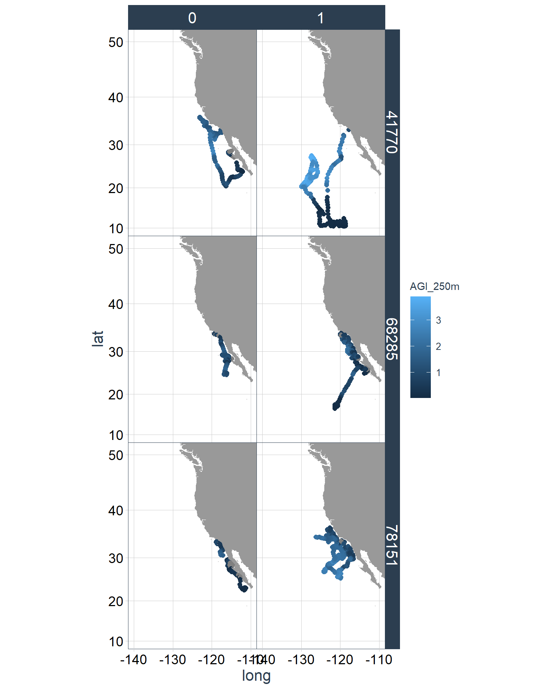
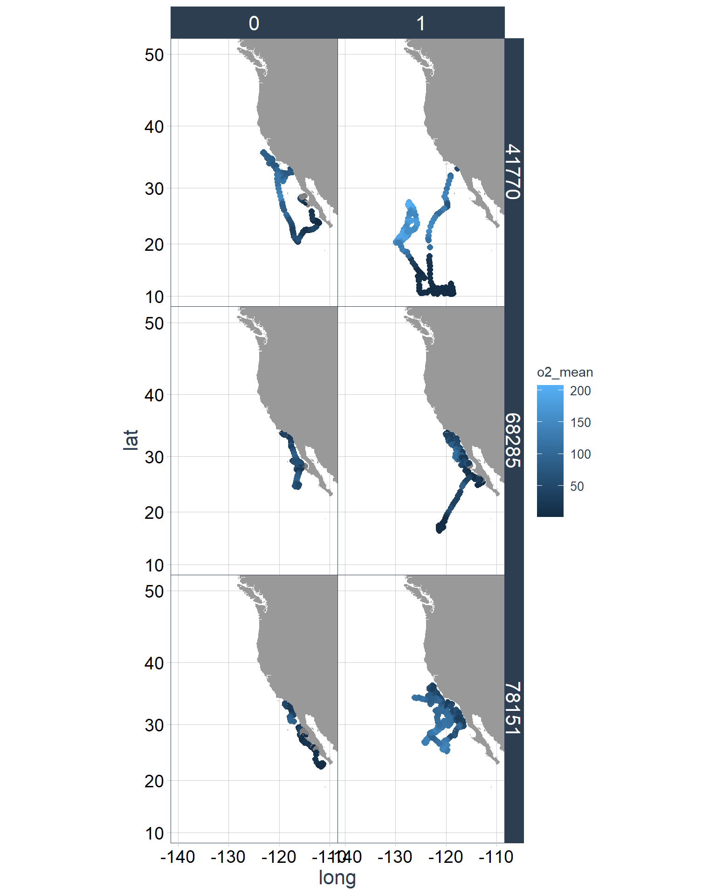

| Covariate | Justification | Refs |
|---|---|---|
| AGI | Metabolic and thermal drivers that may influence habitat use. | Clarke et al., 2021 |
| Bathy | Observed juv. mako associations with bathy contours, proxy for light, salinity, pressure, and temperature. Observed influence surrounding bathy features where prey may aggregate. | Brodie et al., 2018; Sepulveda et al., 2004 |
| Bathy sd (rugosity) | Proxy for habitat complexity and may influence prey availability. Squid abundance associations with shifts in bathy such as sea mounts. | Suca et al., 2022 |
| Chl-a | Proxy for productivity and prey aggregations (including SDMs for Jumbo/Humboldt squid and Pa. Saury). Observed seasonal movements within the CCS coinciding with peaks in chl-a. | Brodie et al., 2018; Ramos et al., 2017; Paulino et al., 2016; Nasby-Lucas et al., 2019; Syah et al., 2016 |
| MLD | Association with MLD and mako vertical habitat use. MLD effects the vertical water column structure (25-200m depth) and distribution of nutrients. | Nasby-Lucas et al., 2019; Brodie et al., 2018 |
| NPPV | Jumbo squid habtiat suitability associations and general proxy for Io prey availability. May expect an inverse relationship between Io presence and NPPV. Observed seasonal movements within the CCS coinciding with peaks in NPPV. | Yu et al., 2019; Nasby-Lucas et al., 2019; Adams et al., 2016; Hsu et al., 2022 |
| DO | Physiological oxygen demands and suggested to constrain the vertical movement of Io. Shoaling OMZ may result in habitat expansion for prey species. | Nasby-Lucas et al., 2019; Ramos et al., 2017; Stewart et al., 2014 |
| salinity | Observed to influence common prey item presence. Not as consistently included in squid lit as other vars (SST, Chl, NPPV). | Ramos et al., 2017; Yu et al., 2019; Stewart et al., 2014; Nasby-Lucas et al., 2019; Hsu et al., 2021. |
| Temperature | Physiological temperature effects on makos and prey. | Nasby-Lucas et al., 2019; Adams et al., 2016; Brodie et al., 2018; Ramos et al., 2017; Yu et al., 2019; Paulino et al., 2016; Succa et al., 2022; Syah et al., 2016; Hsu et al., 2022 |
| UO | Proxy for upwelling. Jumbo squid larval associations with seasonal upwelling. Studies have found catches of squid are higher during strong upwelling years. Some associations with upwelling in CCS and mako shark movements. | Ramos et al., 2017; Yu et al., 2019; Stewart et al., 2014; Nasby-Lucas et al., 2019 |
| VO | Proxy for upwelling. Jumbo squid larval associations with seasonal upwelling. Studies have found catches of squid are higher during strong upwelling years. Some associations with upwelling in CCS and mako shark movements. | |
| SSH | Indicator of divergence and convergence. SSH anomoly used more frequently in prey species SDMs. | Succa et al., 2022 |
Mako hSDM covariate explore (ROMS and CMEM domains)
For each of the figures below, I have visualized what the covariate values are for the CRW PA positions and observed positions. Some values were extracted using the ROMS data, and thus limiting the position range to this domain. I have also explored the covariate values using the full range of the available positions using covariate files from Copernicus (CMEM). Please note that the lists of covariates selected for each data source do vary depending on what was recommended and available.
The covariate values explored on this page are all from 250m.
Lastly, for each collection of a shark’s observed positions, there are 32 replicate PA CRW tracks for the CMEM domain and 16 replicate tracks for the ROMS domain.
Covariate summary plots for all sharks
CMEM figures
Covariate selection justification
The figures below only represent covariate values for observed positions. PA positions were omitted from this analysis due to the quantity.
Abiotic covar comparisons
Below are some comparisons of the covariate values relative to each other for the observed positions (covariate values at PA positions are excluded).
Metabolic demand covar comparisons
Below are some comparisons of the covariate values relative to each other for the observed positions (covariate values at PA positions are excluded).
AGI covar comparisons
Below are some comparisons of the covariate values relative to each other for the observed positions (covariate values at PA positions are excluded).

Lat/lon covar comparisons
Below are some comparisons of the covariate values relative to each other for the observed positions (covariate values at PA positions are excluded).
ROMS figures
Covar vs. covar scatter
Select shark analyses
I randomly selected three tag IDs to include for this next analysis.
set.seed(1004)
sample(1:23, 3) #randomly select 3 sharks: 11, 22, and 1[1] 11 22 1#filter to only keep the tag IDs of the above three sharks.
cmem_dat_sub <- cmem_dat %>% filter(tag == "41770" | tag == "68285" | tag == "78151")
cmem_obsv_sub <- cmem_dat_sub %>% filter(PA == 0)I then randomly select which repetition number I want to include as a representative for this series of analyses. I am left with a subset of the data which will be used for the Select Shark Analyses portion of this document.
sample(1:32, 1) [1] 13cmem_rep_sub = NULL
for(i in 1:length(unique(cmem_dat_sub$tag))){
curr_ID <- unique(cmem_dat_sub$tag)[i]
temp_df <- cmem_dat_sub[cmem_dat_sub$tag %in% curr_ID,]
temp_df <- temp_df %>% group_by(rep)
curr_rep <- unique(temp_df$rep)[13] #number randomly selected above
temp_df2 <- temp_df[temp_df$rep %in% curr_rep,]
cmem_rep_sub <- rbind(cmem_rep_sub, temp_df2)
}
cmem_dat_sub2 <- rbind(cmem_obsv_sub, cmem_rep_sub)CMEM AGI
These figures track how DO changes through a shark’s track for both its observed positions (‘0’) and PA positions (‘1’).

CMEM DO
These figures track how DO changes through a shark’s track for both its observed positions (‘0’) and PA positions (‘1’).

CMEM Temp.
These figures track how temp. changes through a shark’s track for both its observed positions (‘0’) and PA positions (‘1’).
ROMS DO
These figures track how DO changes through a shark’s track for both its observed positions (‘0’) and PA positions (‘1’).
ROMS Temp.
These figures track how temp. changes through a shark’s track for both its observed positions (‘0’) and PA positions (‘1’).
Maps
Plot DO and temp. values over space for a few representative dates for sanity check of mapped values. Randomly selected three days (day)